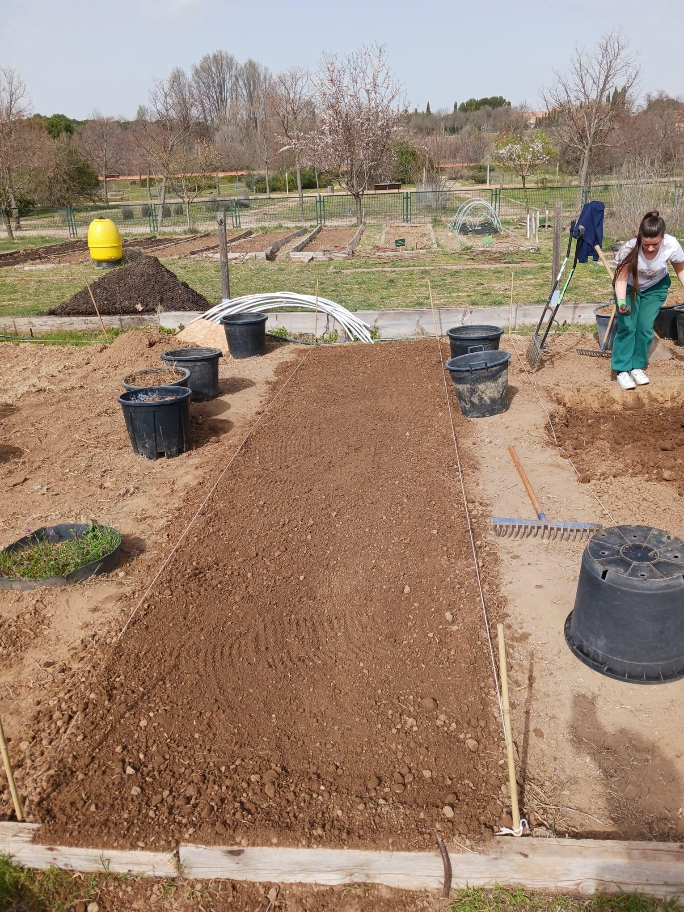
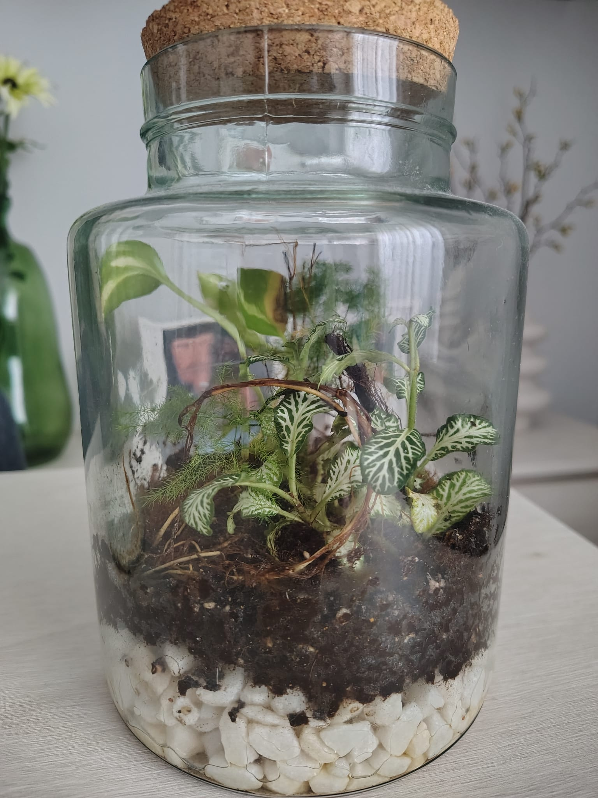
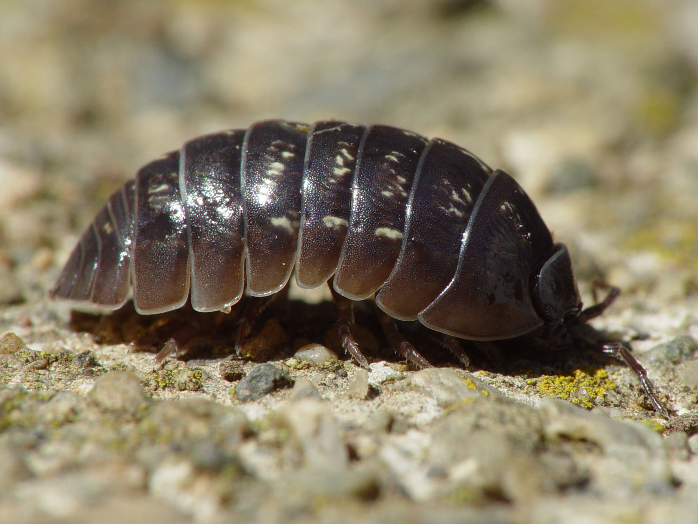

Paso a paso
Paso a paso
Cómo montar tu primer terrario cerrado (y que no se te muera)
Guía para aficionados con fotos reales: qué plantas usar, cómo hacer el drenaje y trucos para un mantenimiento casi nulo.
Aprende haciendo
Paso a paso
Guía para aficionados con fotos reales: qué plantas usar, cómo hacer el drenaje y trucos para un mantenimiento casi nulo.
 Huerto en casa
Huerto en casa
Guía paso a paso para germinar semillas en casa. Mi experiencia, lo que ha funcionado genial y los errores de novato que no volveré a cometer.
 Sustratos
Sustratos
Aprende a preparar la mezcla casera 50-30-20. Capas, drenaje, colémbolos y el secreto para que la tierra se mantenga perfecta.
Proyecto Real

Diario #1Cómo empezamos a diseñar el huerto desde cero aplicando principios de sostenibilidad. Primeros pasos de preparación y trabajo en el terreno.
 Diario #2
Diario #2
Lidiando con la lluvia, la planificación estratégica, las primeras siembras y el descubrimiento de la biodiversidad en nuestro bancal.
 Diario #3
Diario #3
Instalación del sistema de riego por goteo, planificación de cultivos con Adolfo y el lore de los Tagetes.
 Diario #4
Diario #4
Educación ambiental con niños de primaria, lidiar con las ausencias en el equipo y la cruda reality de que te roben las lechugas.
 Diario #5
Diario #5
Excursión al iMiDRA para aprender sobre el compostaje, la colección ampelológica de España y reflexiones sobre nuestras zanahorias.
 Diario #6
Diario #6
Recapitulando semanas perdidas, tormentas intensas, compras en el vivero y el estado de nuestras plantas cuajadas.
Mi selección
 Top 5
Top 5
Mi lista personal de especies resistentes y vistosas. Cuáles son ideales para un ecosistema cerrado y cuáles prefieren una maceta en el salón.

Materiales¿Tarro de cocina, urna profesional o contenedor abierto? Te cuento qué recipientes uso yo y cuáles recomiendo para empezar.

BioactivosDescubre por qué estos pequeños invertebrados son vitales para mantener tu ecosistema vivo y sin pudriciones.

Sobre el autor
No me tomo lo de los terrarios como un profesional súper técnico, sino como alguien que simplemente quiere decorar su casa creando pequeños ecosistemas llenos de vida, de esos que son eternos y requieren muy poco mantenimiento.
También me he enganchado a montar mi propio minihuerto, así que aquí comparto mis aventuras plantando lechugas, tagetes y capuchinas sin salir del salón. Todo 100% real, basado en mi propia experiencia, con mucho ensayo y error.
Este sitio participa en el Programa de Afiliados de Amazon EU. Si compras a través de mis enlaces, recibo una pequeña comisión sin coste adicional para ti.